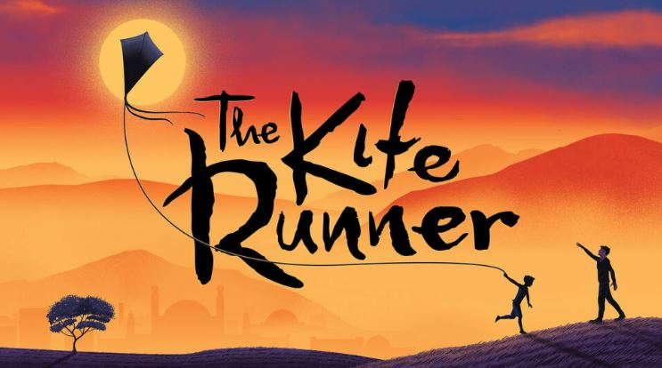

Review of one of the popular Books of Khaled Hosseini
Review by Anonymous Reader

For Audio Version of this book
Click here
Review:
Completed this masterpiece by "Khaled Hosseini" and thinking how can
a book be so emotional, impactful and full of childhood memories.
Actually i don't have words to describe the brilliance of this novel.
Just with the starting i fell in love with each and every character
of this novel. This story of novel made me so emotional with its each
and every turn and divergence and made me to realize the importance of the friends
and people in your life you love the most.
This novel took me to my childhood and made me to feel my childhood
memories, kite running, true friendship, happiness, sadness, guilt, frustration, hope, anger and innocence.
I almost cried when Hassan and Ali was leaving the home in a rainy
day and putting their belongings into a car trunk while Amir was
watching them from the window and Baba was crying.....that was the most tearful moment💔
And the most beautiful parts are whenever Amir recalling their
beautiful childhood memories with Hassan and Baba with each and
every thing he saw in Afghanistan while searching for Sohrab.
And at the end of this novel these 2 lines from the Amir's side
was actually the feelings which i felt with all emotions and depth
of my heart........these lines are:
"For you, a thousand times over"......
"I ran, A grown man running with a swarm of screaming children. But
i didn't care"❤
I can confidently say that this is by far the bestest book that i
have ever read, i am still immersed in the excellence of this book and unable to pull myself out of it.....
This book is highly recommended to all the readers and i am sure it will change your perception
regarding life and leave the positive impression on your daily works.
PS: "The Kite Runner" is one of those memorable stories that stays
with you for years💓
Was this Article helpful?